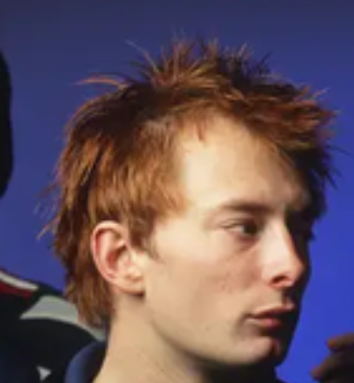

Thom yorke Ph era(with blone and long hair )
He looks 9/10 (my fav look of thom)
His singing is fine 8/10
His music writing is mid 4/10
His dressing is fantastic 9.5/10
Overall 8.5/10

Thom yorke bend era (with red/gigner hair)
He looks 10/10
I Lowkey loved the bends and the b side 10/10 singing
His music writing is solid 8.5/10
his dressing sense is soo fucking perfect 10/10
overall 9/10